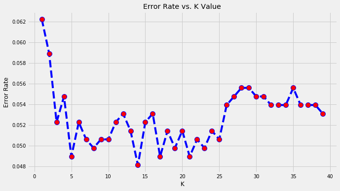
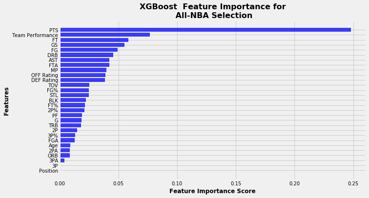

Predicting All-NBA Teams
 Photo by JC Gellidon on Unsplash
Photo by JC Gellidon on Unsplash
2020 All-NBA Predictions
Who will be named to the All-NBA teams this year? In this project, we fit several classification models on per 100 possessions data to vote in this year’s All-NBA selection. Then, we aggregate the results from each model that mimics the current All-NBA voting system.
Table of contents
All-NBA Selection
The All-NBA award is an annual NBA distinction bestowed to players with outstanding performances after a given season. Since 1989, the All-NBA award has been consistently partitioned into 3 tiers; 1st, 2nd and 3rd All-NBA teams where each team is uniquely composed of 2 guards, 2 forwards and 1 center.
The NBA holds a firm reputation of being a Star-Driven League, meaning that teams who boast the top players on their active rosters are the ones who can legitimately and exclusively contend for championships. The identification of All-NBA caliber players provides an interesting avenue where we can explore which players can serve as foundational pieces, and that may eventually land a fortunate team an elusive championship.
While NBA pundits are accustomed to making predictions based on preconceived biases and opinions on players, we make our own All-NBA predictions using a set of classification models which hopefully reduces the emotional elements and recall biases plaguing NBA voting.
Obtaining/Scraping NBA Data
Box-score metrics standardized by per 100 possessions was obtained through R, using the bballR R package. We chose to look at per 100 possessions as it provides a more intuitive comparison between players under different eras and team offence styles.
Past All-NBA winners dating back from 1989 onward to 2019 was scraped through Basketball Reference with the rVest R package.
To further reduce noise in the data, we chose to only consider players meeting the following 2 conditions:
- Player participated in at least 10 games
- Player played at least 25 minutes/game
These conditions remove players who are not full-time NBA players and is aimed at choosing a representative sample of NBA players who are more inclined to be considered for the All-NBA teams.
Data Inconsistencies
Many issues were faced when collecting data from different sources. One main concern was that player position data were inconsistent. For example in the 2017-18 season Anthony Davis was coded as a Forward, despite winning All-NBA award that year as a Center. Similarly in that same year, both Jimmy Butler and Lamarcus Aldridge were coded as a Guard and Center respectively, despite both being named onto the All-NBA as Forwards. Position adjustments were made adhering to the position coded in the All-NBA data but since not all players are in the All-NBA data, it is very likely that other position inconsistencies were left untreated in the data.
Model Votes
In total, 6 models including Logistic Regression, Random Forest, Generalized Additive Model (GAM), K-Nearest-Neighbours (KNN), Support Vector Machine (SVM) and XGBoost were fitted onto our data. Each model provided a probability estimate for each player being named to a 2020 All-NBA team, which we then ranked from greatest to least by position. We then mimic the current voting rules where for each voter, the top 2 ranked guards, top 2 forwards and top centre are awarded 3 voting points. The subsequent top 2 ranked guards, 2 forwards and center are awarded 2 voting points and the next sequence are awarded 1 voting point. We then add an extra sequence of players, which were awarded 0.5 voting points.
The prediction results are as follows:
Predicted 2020 All-NBA 1st Team
| Player | Position | Votes |
|---|---|---|
| Luka Dončić | Guard | 18 |
| James Harden | Guard | 18 |
| Giannis Antetokounmpo | Forward | 18 |
| LeBron James | Forward | 17 |
| Anthony Davis | Center | 18 |
Predicted 2020 All-NBA 2nd Team
| Player | Position | Votes |
|---|---|---|
| Russell Westbrook | Guard | 10 |
| Damian Lillard | Guard | 9.5 |
| Kawhi Leonard | Forward | 13 |
| Jimmy Butler | Forward | 7 |
| Nikola Jokić | Center | 9 |
Predicted 2020 All-NBA 3rd Team
| Player | Position | Votes |
|---|---|---|
| Trae Young | Guard | 5.5 |
| Donovan Mitchell | Guard | 4 |
| Khris Middleton | Forward | 6.5 |
| Jayson Tatum | Forward | 5 |
| Rudy Gobert | Center | 8.5 |
Honourable mentions
Guards: Bradley Beal (3.5 votes), Kemba Walker (3 votes), Kyle Lowry (2 votes)
Forwards: Bam Adebayo (4 votes), Pascal Siakam (3 votes), Paul George (2 votes)
Center: Joel Embiid (3.5 votes)
The total voting results for all players receiving a vote can be found in the table below.
| Position | Player | Total Votes |
|---|---|---|
| Center | Anthony Davis | 18 |
| Center | Nikola Jokić | 9 |
| Center | Rudy Gobert | 8.5 |
| Center | Joel Embiid | 3.5 |
| Center | Hassan Whiteside | 1 |
| Center | Montrezl Harrell | 1 |
| Center | Andre Drummond | 0.5 |
| Center | Karl-Anthony Towns | 0.5 |
| Forward | Giannis Antetokounmpo | 18 |
| Forward | LeBron James | 17 |
| Forward | Kawhi Leonard | 13 |
| Forward | Jimmy Butler | 7 |
| Forward | Khris Middleton | 6.5 |
| Forward | Jayson Tatum | 5 |
| Forward | Bam Adebayo | 4 |
| Forward | Pascal Siakam | 3 |
| Forward | Paul George | 2 |
| Forward | Zion Williamson | 1.5 |
| Forward | Bojan Bogdanović | 1 |
| Guard | James Harden | 18 |
| Guard | Luka Dončić | 18 |
| Guard | Russell Westbrook | 10 |
| Guard | Damian Lillard | 9.5 |
| Guard | Trae Young | 5.5 |
| Guard | Donovan Mitchell | 4 |
| Guard | Bradley Beal | 3.5 |
| Guard | Kemba Walker | 3 |
| Guard | Kyrie Irving | 2.5 |
| Guard | Kyle Lowry | 2 |
| Guard | Ben Simmons | 1 |
| Guard | Chris Paul | 0.5 |
| Guard | Zach LaVine | 0.5 |
A more in depth breakdown of the votes for each model, can be found in the model’s respective subsection.
Model Comparisons
To ensure fair and consistent comparison, we fit each model using the same training set and evaluate performance using the same test set. Since there was a huge imbalance in the number of All-NBA players vs. the number of Non-All-NBA players, we chose to obtain the train-test split with identical proportion of All-NBA cases. Here is the breakdown of our training and test data:
| Data | # 1st All NBA Team Players | # 2nd All NBA Team Players | # 3rd All NBA Team Players | # Non-All-NBA Players |
|---|---|---|---|---|
| Training Data | 116 | 116 | 116 | 3625 |
| Test Data | 39 | 39 | 39 | 1088 |
| Total | 155 | 155 | 155 | 4713 |
Both the training and test sets are composed of roughly 90% Non-All-NBA players, and 3.3% each of 1st, 2nd and 3rd All-NBA players. In total, the training set contained 348 All-NBA player observations (116 x 3 = 348), while the test set contained 117 All-NBA player observations (39 x 3 = 117).
We evaluate the performances of each model on the test set with the following metrics:
- How well the model identifies players who ultimately end up on the 1st, 2nd or 3rd All-NBA teams. We define ith Team Sensitivity as:
ith Team Sensitivity = # True Positives on ith All-NBA team / Total number players on the ith All-NBA team
where i = 1, 2, 3.- Overall All-NBA sensitivity
Overall Sensitivity = # True Positives on any All-NBA team / Total number players on any All-NBA team- How well the model properly identifies Non-All-NBA players. We define the False Positive Rate (FPR) as
FPR = # False Positive All-NBA players / Total number Non-All-NBA players Note: True Positives represent the number of correctly predicted All-NBA players, while False Positives represent the number of incorrectly predicted All-NBA players.Ideally, we want models to have high sensitivity and low FPR. 1st Team All-NBA players should in theory be the easiest for the models to identify, since these players represent the supposed elite top 5 players after a given season. On the other hand, players who ultimately end up on the 2nd and 3rd All-NBA teams might be tougher for the models to identify; usually there is less consensus among voters on players occupying the secondary and tertiary teams.
Below, we present a table comparing our 5 models based on the metrics described above.
| Performance Metric | Logistic Regression | Random Forest | GAM | KNN | SVM | XGBoost | |
|---|---|---|---|---|---|---|---|
| 1 | 1st All-NBA Sensitivity | 0.92 | 0.87 | 0.97 | 0.85 | 0.90 | 0.87 |
| 2 | 2nd All-NBA Sensitivity | 0.72 | 0.69 | 0.82 | 0.54 | 0.80 | 0.74 |
| 3 | 3rd All-NBA Sensitivity | 0.51 | 0.41 | 0.59 | 0.31 | 0.54 | 0.46 |
| 4 | Overall All-NBA Sensitivity | 0.72 | 0.66 | 0.80 | 0.56 | 0.74 | 0.69 |
| 41 | FPR | 0.02 | 0.01 | 0.03 | 0.01 | 0.02 | 0.02 |
How do we interpret these results? Let’s consider the logistic regression performance row. We see that this model was able to correctly identify 92.3 % of 1st team All-NBA players in the test set. That’s 36 out of 39 1st team players identified, which also means that this model was unable to identify three 1st All-NBA players (fyi these 3 players were: Guard Latrell Sprewell in 1994, Guard Jason Kidd in 1999 and Center Marc Gasol in 2015). Furthermore, the model was able to correctly identify 71.8 % of 2nd team All-NBA players (28 of 39) and 51.3% of 3rd team All-NBA players (20 of 39).
In general, we see that all models have an easier time predicting players on the 1st team All-NBA compared to the remaining 2 All-NBA teams. Intuitively this means that the model is easily able to identify the greatest players (ranked 1 – 5) but struggles in identifying the last selections (ranked 11 – 15). We also generally see a tradeoff between a model’s sensitivity and their FPR. Take for example GAM which has the highest sensitivities across all 3 All-NBA teams, but also the highest FPR when compared against its competing models. The GAM model makes a higher volume of All-NBA predictions than its competitors, which leads to both a higher volume of True Positives (identifiying true All-NBA players) and False Negatives (misidentifying All-NBA players).
Logistic Regression
Logistic regression was the first classification algorithm fitted to our All-NBA data. Players with a predicted probability of making the All-NBA greater than 50% were classified as All-NBA predictions in the traning and test stages.
Logistic Regression 2020 Predictions
Here, we present the model’s All-NBA probability predictions on the 2020 season.
| Position | Probability | Player |
|---|---|---|
| Center | 96.1 | Anthony Davis |
| Center | 58.4 | Nikola Jokić |
| Center | 49.2 | Rudy Gobert |
| Center | 36.4 | Joel Embiid |
| Center | 27.6 | Karl-Anthony Towns |
| Forward | 100.0 | Giannis Antetokounmpo |
| Forward | 99.6 | LeBron James |
| Forward | 82.6 | Kawhi Leonard |
| Forward | 37.4 | Jimmy Butler |
| Forward | 33.3 | Khris Middleton |
| Forward | 9.7 | Bam Adebayo |
| Forward | 8.0 | Zion Williamson |
| Forward | 7.0 | Jayson Tatum |
| Guard | 98.3 | James Harden |
| Guard | 97.9 | Luka Dončić |
| Guard | 71.0 | Damian Lillard |
| Guard | 43.0 | Kyrie Irving |
| Guard | 38.6 | Trae Young |
| Guard | 27.9 | Russell Westbrook |
| Guard | 14.7 | Ben Simmons |
| Guard | 13.1 | Chris Paul |
Random Forest Classifier
A Random forest algorithm was the second classification algorithm fitted to our All-NBA data. The formation of nodes was made based on a gini index criterion (i.e. splitting nodes based on minimizing gini impurity). Other criterion, like entropy, was considered however was found to have comparable performance in terms of precision. The binary classification of All-NBA selection vs. Non-All-NBA selection was made with a threshold of 50% of votes from the aggregate decision trees. Other threshold values were considered, however was found to have lower precision. In total, we set 200 decision trees for the random forest.
Random Forest 2020 Predictions
The probability estimates obtained represent the proportion among the 200 decision trees that predict an All-NBA selection.
| Position | Probability | Player |
|---|---|---|
| Center | 84.0 | Anthony Davis |
| Center | 53.0 | Rudy Gobert |
| Center | 42.5 | Nikola Jokić |
| Center | 33.5 | Joel Embiid |
| Center | 31.5 | Montrezl Harrell |
| Forward | 85.0 | Giannis Antetokounmpo |
| Forward | 76.0 | LeBron James |
| Forward | 68.0 | Kawhi Leonard |
| Forward | 33.5 | Khris Middleton |
| Forward | 29.0 | Paul George |
| Forward | 27.0 | Zion Williamson |
| Forward | 26.0 | Jimmy Butler |
| Forward | 25.5 | Jayson Tatum |
| Guard | 78.0 | James Harden |
| Guard | 71.0 | Luka Dončić |
| Guard | 53.5 | Russell Westbrook |
| Guard | 44.0 | Damian Lillard |
| Guard | 41.5 | Trae Young |
| Guard | 38.0 | Bradley Beal |
| Guard | 34.5 | Donovan Mitchell |
| Guard | 33.0 | Kyrie Irving |
Random Forest Feature Importance
With random forests, we also evaluate the relative importance of each feature in the fitted model. This is done by calculating the relevance score of each feature, standardized such that the sum of all feature scores is 1.

From the Feature Importance plot, we see that Points scored is by and large the most important feature in deciding whether a player is predicted to be All-NBA. This is then followed by Field goals made and then the overall performance of the team. It has been frequently suggested, especially by members of the media who participate in All-NBA voting, that players who put up great numbers on winning teams are viewed more favorably than players who put up amazing numbers on losing teams. This is fuelled by the notion that players on great teams often sacrifice personal accolades for the success of the team, which is warmly embraced by the media.
Generalized Additive Models (GAM)
Previously, we used a logistic regression model to estimate a player’s probability of being named All-NBA at the end of a season. However, this GLM model assumes a linear relationship between the predictors and the log-odds of All-NBA selection, which may not be true. GAM models on the other hand do not assume a priori any specific structure for the relationship between the predictors and the outcome of All-NBA selection. In fact, GAMs can be used to model non-linear effects of these predictors on the response variable with the aid of spline functions. In a sense, we can consider GAM models as a more flexible version of GLM models. More information on GAMs can be found here.
When fitting the GAM model, we left all hyper-parameters with their default values. A random search on the lambda penalty hyper-parameter was performed, however was found to have weaker performance when applied to the test-set.
GAM 2020 Predictions
| Position | Probability | Player |
|---|---|---|
| Center | 96.6 | Anthony Davis |
| Center | 96.0 | Rudy Gobert |
| Center | 95.8 | Nikola Jokić |
| Center | 29.4 | Hassan Whiteside |
| Center | 26.8 | Joel Embiid |
| Forward | 100.0 | Giannis Antetokounmpo |
| Forward | 100.0 | LeBron James |
| Forward | 97.9 | Kawhi Leonard |
| Forward | 68.0 | Bam Adebayo |
| Forward | 21.5 | Jayson Tatum |
| Forward | 18.0 | Pascal Siakam |
| Forward | 17.6 | Khris Middleton |
| Forward | 8.7 | Jimmy Butler |
| Guard | 100.0 | James Harden |
| Guard | 99.8 | Luka Dončić |
| Guard | 66.8 | Kemba Walker |
| Guard | 62.5 | Russell Westbrook |
| Guard | 57.7 | Kyle Lowry |
| Guard | 18.6 | Donovan Mitchell |
| Guard | 15.8 | Damian Lillard |
| Guard | 5.8 | Zach LaVine |
K Nearest Neighbours (KNN)
Before applying the KNN algorithm, we standardized all continuous features in our data. Then, to choose an optimal value of k, we performed the algorithm with varying values of k and looked at the corresponding error rates. As shown in the Error Rate vs. K value graph below, k = 14 corresponded to the value with the lowest error rate.

KNN 2020 Predictions
| Position | Probability | Player |
|---|---|---|
| Center | 92.9 | Anthony Davis |
| Center | 78.6 | Nikola Jokić |
| Center | 50.0 | Joel Embiid |
| Center | 28.6 | Andre Drummond |
| Center | 28.6 | Rudy Gobert |
| Forward | 100.0 | Kawhi Leonard |
| Forward | 92.9 | Giannis Antetokounmpo |
| Forward | 92.9 | LeBron James |
| Forward | 35.7 | Jayson Tatum |
| Forward | 28.6 | Jimmy Butler |
| Forward | 21.4 | Paul George |
| Forward | 14.3 | Pascal Siakam |
| Forward | 14.3 | Bojan Bogdanović |
| Guard | 92.9 | James Harden |
| Guard | 85.7 | Luka Dončić |
| Guard | 42.9 | Damian Lillard |
| Guard | 42.9 | Russell Westbrook |
| Guard | 42.9 | Bradley Beal |
| Guard | 28.6 | Trae Young |
| Guard | 21.4 | Donovan Mitchell |
| Guard | 21.4 | Kyle Lowry |
Support Vector Machine (SVM)
A random search on the values of the parameters ‘C’ and ‘gamma’ was performed prior to fitting the SVM model, which were found to have similar performance to an SVM model equipped with the default settings of these parameters (C = 1, gamma = 1 / number of features). A radial basis function was chosen for the kernel.
SVM 2020 Predictions
| Position | Probability | Player |
|---|---|---|
| Center | 98.7 | Anthony Davis |
| Center | 87.5 | Rudy Gobert |
| Center | 82.2 | Nikola Jokić |
| Center | 52.7 | Joel Embiid |
| Center | 50.6 | Hassan Whiteside |
| Forward | 100.0 | Giannis Antetokounmpo |
| Forward | 100.0 | LeBron James |
| Forward | 94.8 | Kawhi Leonard |
| Forward | 54.4 | Jimmy Butler |
| Forward | 51.2 | Khris Middleton |
| Forward | 37.9 | Bam Adebayo |
| Forward | 35.7 | Jayson Tatum |
| Forward | 28.7 | Pascal Siakam |
| Guard | 100.0 | James Harden |
| Guard | 99.6 | Luka Dončić |
| Guard | 83.4 | Damian Lillard |
| Guard | 64.4 | Trae Young |
| Guard | 62.8 | Russell Westbrook |
| Guard | 33.7 | Bradley Beal |
| Guard | 31.3 | Ben Simmons |
| Guard | 26.3 | Kyle Lowry |
XGBoost

XGBoost 2020 Predictions
| Position | Probability | Player |
|---|---|---|
| Center | 89.2 | Anthony Davis |
| Center | 64.7 | Nikola Jokić |
| Center | 29.2 | Rudy Gobert |
| Center | 10.0 | Montrezl Harrell |
| Center | 9.1 | Joel Embiid |
| Forward | 98.3 | Giannis Antetokounmpo |
| Forward | 96.7 | LeBron James |
| Forward | 90.6 | Kawhi Leonard |
| Forward | 53.3 | Khris Middleton |
| Forward | 28.8 | Jimmy Butler |
| Forward | 24.4 | Pascal Siakam |
| Forward | 22.1 | Jayson Tatum |
| Forward | 10.9 | Bojan Bogdanović |
| Guard | 90.0 | Luka Dončić |
| Guard | 86.2 | James Harden |
| Guard | 59.4 | Russell Westbrook |
| Guard | 50.1 | Donovan Mitchell |
| Guard | 41.3 | Kemba Walker |
| Guard | 41.0 | Damian Lillard |
| Guard | 38.1 | Trae Young |
| Guard | 33.6 | Bradley Beal |
Appendix
All R and Python code to scrape data and fit the models can be found here.
Feature Variables
- PTS: Points scored per 100 possessions
- AST: Assists per 100 possessions
- STL: Steals per 100 possessions
- BLK: Blocks per 100 possessions
- MP: Minutes played
- ORB: Offensive rebounds per 100 possessions
- DRB: Defensive rebounds per 100 possessions
- TOV: Turnovers per 100 possessions
- PF: Personal fouls per 100 possessions
- OFF Rating: Offensive rating (An estimate of points produced per 100 possessions)
- DEF Rating: Defensive rating (An estimate of points allowed per 100 possessions)
- Team Performance: A team’s total # wins / League total # wins
How does All-NBA voting work?
Selection is controlled by a panel of sportswriters and broadcasters (i.e. the media) who select players for the All-NBA 1st, 2nd and 3rd Teams by position. A tally of all the votes are then taken to determine the results of All-NBA selections for all three teams. Players placed on a 1st All-NBA team ballot are awarded 5 points, while players placed on a 2nd All-NBA team ballot are awarded 3 points and 1 point for a 3rd All-NBA team ballot.